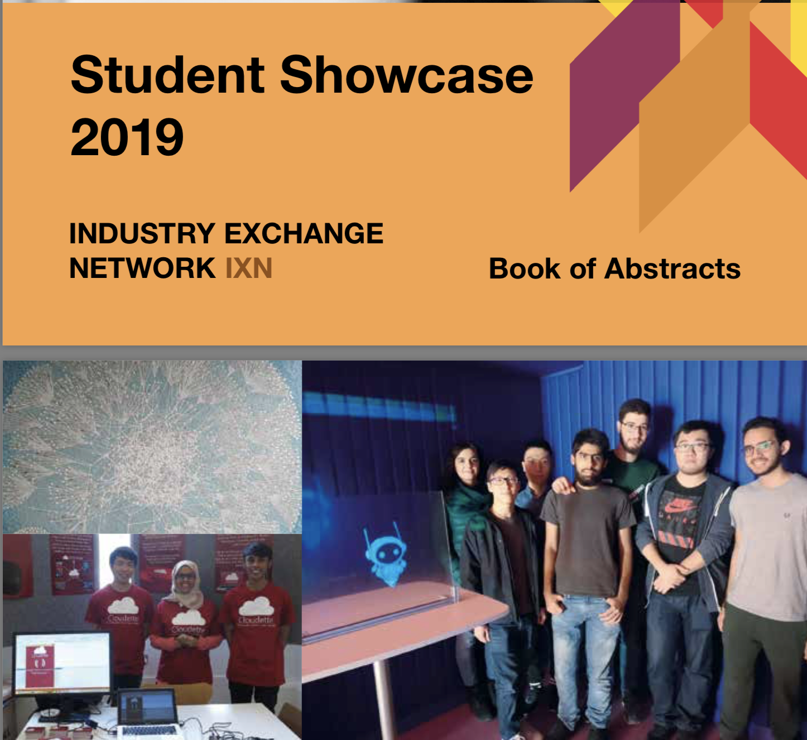

Mostafa Ibrahim
I am a third year Computer Science Bsc student at University College London,
studying at a university abroad really boosted my personal development and my interpersonal skills as I got to immerse in diverse culture at UCL.
Moreover, I have a passion for programming and working on new and exciting software projects.
Finally, Working at the ARM, Great Ormond Hospital and
Nuffield Health provided me with great insight on the software development cycle
and how to correctly provide an excellent software engineering service to a client.
Experience
Web Developer Intern
- I was working on improving a web application, which can be found here
Product Download Hub
- My main responsibilites were
- developing new features such as allowing users to select ARM product versions especially for export controlled products
- Adding Insights from the application into Azure to help improve business analytics
- Assist in delivering support for high-end ARM CPU chips such as ZEUS MPCore, System Models and PDG products
- Adding ARM's new Flexible Access for Research program that helps university students and professors use ARM's IP
-Although that was challenging I managed to get integrated into the work flow and deliver one of the 5 features that were supposed to be delivered by the end of the Agile PI (3 months period)
UCL CS IXN Lead Full Stack Web Developer
- Developed a full stack web application that offers corporate and individual users the ability to register their credentials and connect their Fitbit watch to their accounts.
- Users can visualize their health data, connect their accounts to a corporate.
- The application offers users a Web ID for decentralized data storage systems.
Industry Exchange Network Showcase


UCL CS IXN Software Developer
- This was my first work experience as a Software Developer.
- Project 1: A game for children with lung disease, was developed in collaboration with Microsoft.
- I was responsible for communicating with the client and developing core gameplay.
- Project 2: Web-based interactive Medical Robot that is used for training medical students.
- I was responsible for developing speech-to-text recognition and implementation.
- Technical skills used were Unity, C#, JavaScript and Object-Oriented Programming.
Here is a video of the project 1 with full explanation, skip to 4:15 for the actual game:
Here is a video of the project 2 with full explanation.
Paid Computer Science First Year Students Tutor
Tutoring a group of 10 students by helping them with algorithms,data structures and programming coursework. I am also teaching them how to program in C, Python and Haskell
Attended IBM Insight Day
Attended a full day at IBM Hursley, where I worked on logic, business and software engineering case studies, the case studies were intelligently designed by IBMers to simulate a full day of working at IBM.I also met a very interesting group of people ranging from Software engineer graduates to seniors.
UCL Project: Dynamic Maze-Solver robot.
- The challenge was to program a robot that stores a maze while going through it and select the shortest path.
- My role was the main programmer, I worked on finding the best possible graph algorithm and completely did it's implementation
- Technical skills used were C and graph algorithms.
- This was a very good chance to implement what I learned in the
two algorithms modules that I studied, algorithms , data structures,logic
and analysis of algorithms
UCL Project: Python chatting application.
- This was an individual project, I programmed the backend of a
client-server architecture chatting application
- It was programmed using asyncio (asynchronous input/output) python library
- The main features were:
* User-creation system
* one-to-one chatting
* sending commands to the server
* server gives descriptive error feedbacks